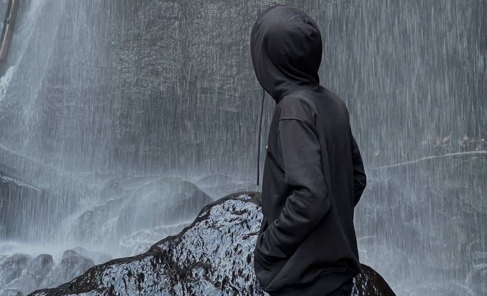

Saya Hikmal Alfatih —
teknisi board-level Apple.
Saya Hikmal Alfatih, Apple Hardware Repair Specialist — teknisi board-level untuk iPhone, iPad, dan Mac. Pekerjaan saya bukan sekadar ganti part: saya mendiagnosa kerusakan sampai ke level mesin dan IC, lalu mengembalikan perangkat yang sudah divonis mati total.
Saat ini saya bekerja sebagai Machine Expert di Applenesia Bandung, sambil menjalankan jasa service personal secara freelance. Prinsip saya sederhana: diagnosa dulu, biaya disampaikan setelah diagnosa, dan pekerjaan hanya dikerjakan kalau kamu setuju. Kalau servisnya tidak berhasil, tidak ada biaya apa pun.

Hikmal Alfatih — Apple Hardware Repair Specialist, Bandung.
Machine Expert — Applenesia
Diagnosa kerusakan mainboard, IC replacement, ACP, reballing, soldering presisi, dan board swap untuk iPhone dan iPad mati total.
Interface Expert — PT. Eka Putra Berkat
Ganti display, baterai, dan komponen interface untuk iPhone, iPad, MacBook, dan Apple Watch.
Interface Expert — PT. iColor Digital Indonesia
Perbaikan layar, baterai, tombol, dan hardware Apple lainnya.
Diagnosa Board-Level & Perbaikan IC
Pelacakan kerusakan mainboard sampai komponen, penggantian IC, reballing, dan soldering presisi — termasuk kasus mati total yang ditolak tempat service lain.
Face ID & Ganti Komponen
Perbaikan Face ID TrueDepth (dicoba dulu, biaya berlaku kalau berhasil) serta penggantian LCD, baterai, kamera, dan komponen interface lainnya dengan part yang dikabari dulu harganya.
Prinsip Kerja
Diagnosa dulu sebelum vonis. Biaya disampaikan setelah diagnosa, dikerjakan hanya kalau kamu setuju. Servis yang tidak berhasil tidak dikenakan biaya. Yang tidak bisa saya bantu: perangkat nyangkut iCloud, bypass OS, dan membuka password MacBook.
Saya melayani service iPhone, iPad, dan Mac secara personal (freelance) di Bandung. Ringkasan tarif jasa yang berlaku — detail lengkap ada di bagian Layanan di beranda:
Jasa Ganti Part (di luar part)
iPhone 5–8 Rp30rb · X–12 Rp50rb · 13–14 Rp75rb · 15–17 Rp100rb. iPad: lama Rp75rb · menengah Rp100rb · baru Rp125rb · Pro 11 & 12.9 Rp150rb. Mac jasa pasang: Air & Pro 13 Rp200rb · Pro 14/16 Rp250rb · mini Rp150rb · iMac Rp300rb. Install ulang Mac Rp250rb. Seal waterproof baru +Rp10rb.
IC / Mesin (sudah termasuk part)
iPhone mulai Rp200rb (series 6), naik Rp100rb per series. Mac mulai Rp1,25jt. Harga pasti dikabari setelah diagnosa.
Face ID TrueDepth (berlaku kalau berhasil)
X–11 Rp300rb · 12–13 Rp400rb · 14–15 Rp500rb. Perangkat ditinggal satu hari.
Universitas Terbuka — S1 Sistem Informasi
Program sarjana yang sedang saya tempuh sambil bekerja.
Pondok Pesantren Alfachriyah — Qur'anic Studies
Pendidikan pesantren dengan fokus studi Al-Qur'an dan fiqih.